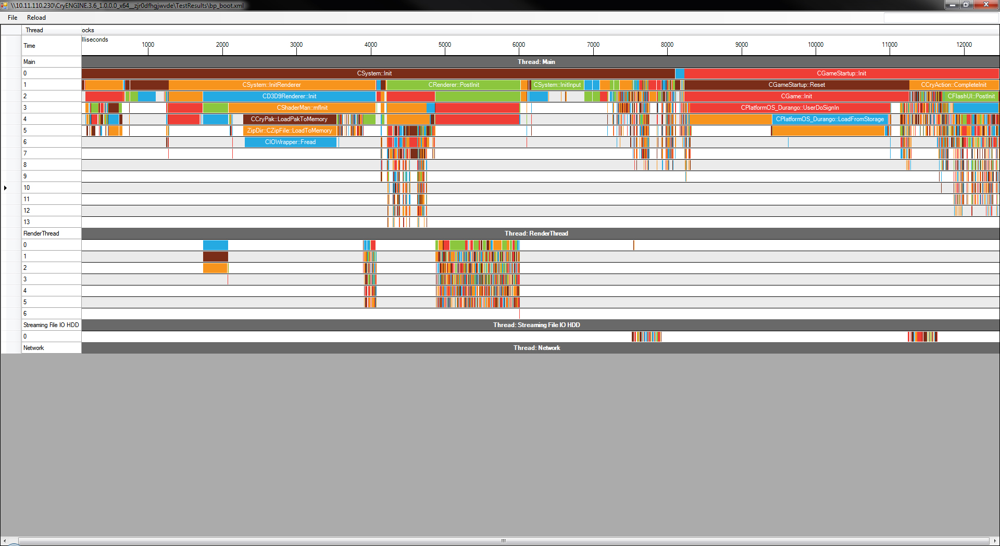
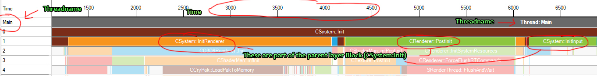
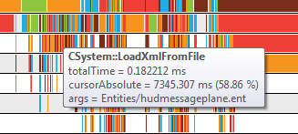
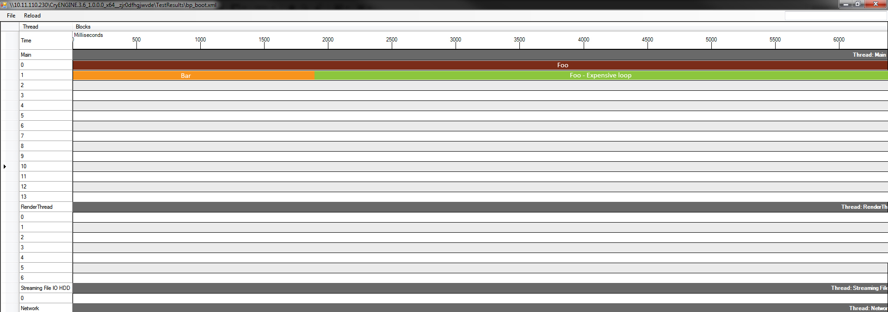

Обзор
Bootprofiler используется для профилирования времени, необходимого для загрузки движка, или для профилирования времени загрузки уровней. Он автоматически записывает каждый раз, когда запускается движок или загружается уровень.

Главы:
Включение загрузочного профилера
В стандартном SDK, когда ENABLE_PROFILING_CODE определено, то оно также будет определять ENABLE_LOADING_PROFILER. Когда эта опция включена, она будет записывать время загрузки и время загрузки уровня при каждом запуске.
Результаты затем сохраняются в TestResults. Файлы называются bp_boot.xml и bp_level.xml
Вы также можете использовать CVar sys_bp_frames включить профилирование для заданного количества кадров — результаты сохраняются в файл bp_frame.xml
Анализ данных
В Tools/ProfVis вы найдете ProfVis.exe, с помощью этого инструмента можно анализировать данные.
Просто перетащите один из файлов из TestResult в инструмент или воспользуйтесь меню «Файл» -> «Открыть» и выберите нужный файл.
Также есть кнопка перезагрузки (вверху), которая обновит данные. Это очень полезно, например, для быстрой итерации: вы можете запустить панель запуска, завершить работу, нажать «перезагрузить» и мгновенно увидеть новые результаты.
Управление: используйте Ctrl + прокрутку мыши для увеличения и уменьшения масштаба и обязательно используйте только горизонтальную полосу прокрутки внизу для навигации влево и вправо.
Понимание инструмента
Когда данные загружаются, создается временная шкала. По горизонтальной оси отобразится время в миллисекундах, по вертикальной оси — потоки.
Бары
Серые полосы — это нити, на которых написано их имя. Строки 0, 1, 2... n внизу — это своего рода слои, которые помогают вам разбить функцию. Например, в строке 0 у вас будет CSystem::Init, а в строке 1 – InitRenderer, PostInit, InitInput.
Последние три функции вызываются изнутри CSystem::Init. Поэтому, когда вы инкапсулируете маркеры профиля, они создают несколько слоев для разбивки функций.

Цвета на данный момент произвольные
Блокировать информацию
Вы можете навести курсор на один из блоков, чтобы получить дополнительную информацию.

- totalTime: время, которое занял этот блок в миллисекундах
- cursorAbsolute: время и процент от полного времени загрузки того места, где находится курсор мыши.
- аргументы: необязательные аргументы, предоставляемые через маркер, обычно полезные для загрузки файлов и т. д.
Фильтр
Вверху справа есть фильтр. Нажатие Enter замаскирует все, что не соответствует фильтру, что облегчит поиск некоторых маркеров.
Маркеры в коде
Вы можете использовать разные маркеры.
Самый основной из них LOADING_TIME_PROFILE_SECTION, это просто помечает функцию для ее профилирования.
Тогда есть LOADING_TIME_PROFILE_SECTION_NAMED, это позволяет программисту дать ему собственное имя. Это может быть полезно, если вы разбиваете функцию.
Оба вышеуказанных маркера имеют вариант, принимающий аргумент: LOADING_TIME_PROFILE_SECTION_ARGS и LOADING_TIME_PROFILE_SECTION_NAMED_ARGS. Оба они делают то же самое (как объяснялось ранее), но позволяют пользователю отправлять аргумент, который будет отображаться в профилировщике, как показано выше (аргумент – это const char*).
Эти макросы являются маркерами области действия, то есть они измеряют, сколько времени прошло между их созданием и уничтожением (когда они выходят за пределы области действия). Помните об этом, когда используете их.
Ниже приведен пример использования маркеров области видимости (обратите внимание на скобки для создания областей видимости):
void Bar()
{
LOADING_TIME_PROFILE_SECTION;
...
}
void Foo()
{
LOADING_TIME_PROFILE_SECTION;
Bar();
{
LOADING_TIME_PROFILE_SECTION_NAMED("Foo - Expensive loop");
while(..) {....}
}
}Это приводит к следующему:
